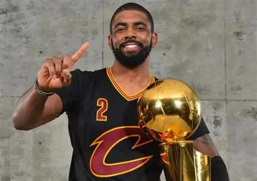

2011 年状元 · 2016 年总冠军
凯里·欧文
把球控在指尖的人
1992 年生于澳大利亚墨尔本，美国职业篮球运动员，司职控球后卫。杜克大学出身，2011 年以状元身份进入 NBA， 先后效力克利夫兰骑士、波士顿凯尔特人、布鲁克林篮网与达拉斯独行侠。2016 年总决赛第七场，他在最后时刻投进的那记三分， 帮助骑士完成 1-3 逆转，也成为他职业生涯最重的一球。
- 2011选秀状元
- 1NBA 总冠军
- 8全明星
- 3最佳阵容

页面导航
共 5 个分页面
人物生涯
从杜克大学到四支球队，一条完整的成长线与生涯时间线。
02历史成就
荣誉年表与统计：总冠军、全明星、最佳阵容，以及那些没拿到的奖。
03评价
两家媒体榜单差了 8 位——技术分极高、生涯分偏低的分裂结论。
04克利夫兰骑士队
2011 年状元起步的地方，也是队史首座总冠军诞生的地方。
05达拉斯独行侠队
2023 年至今的落脚点，伤愈之后重新出发的球队。